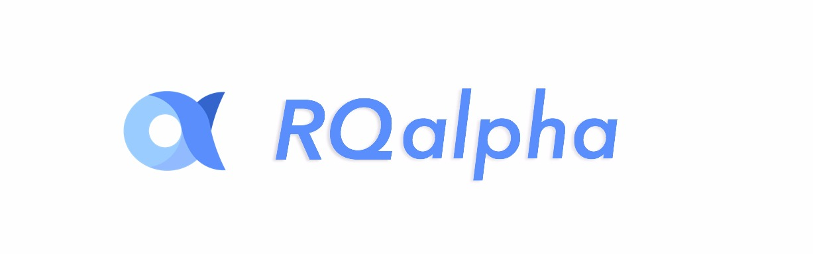
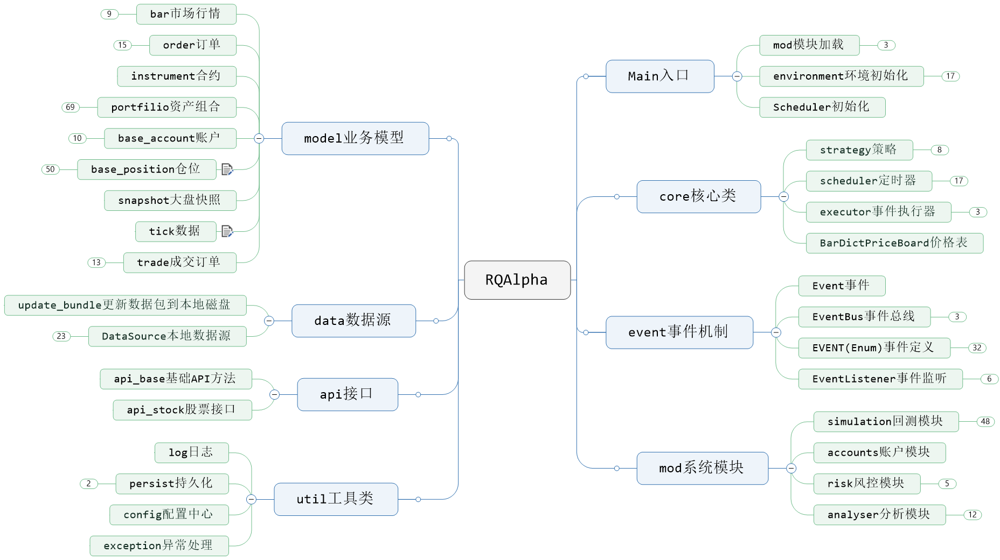
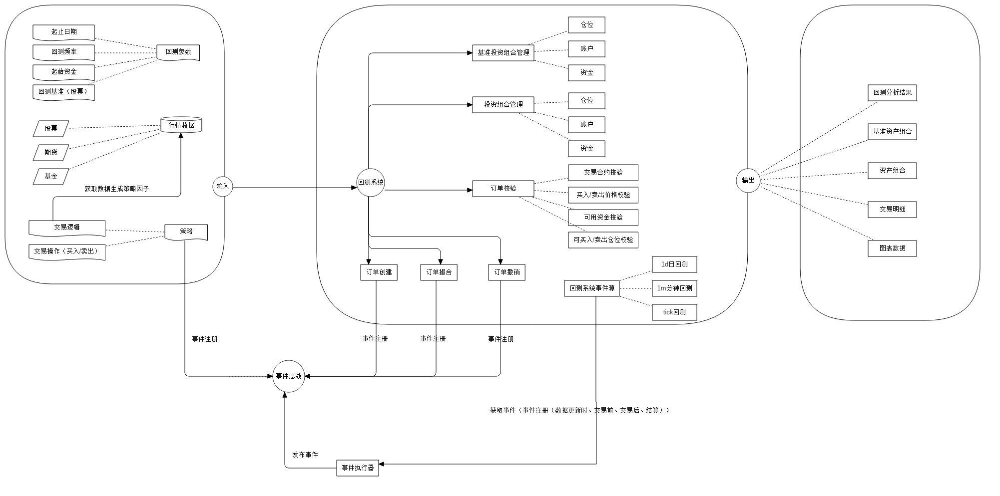
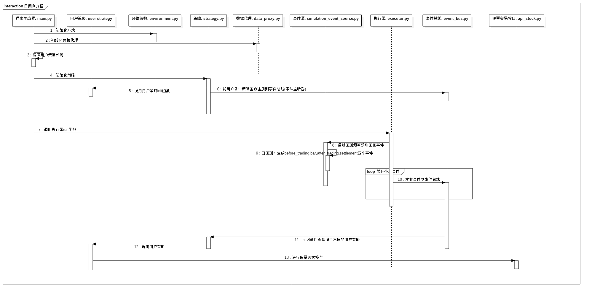
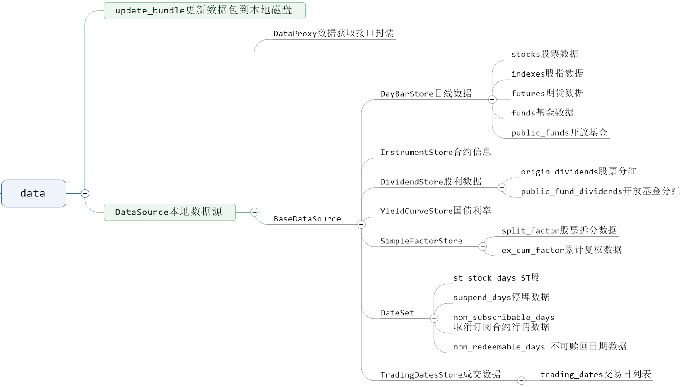
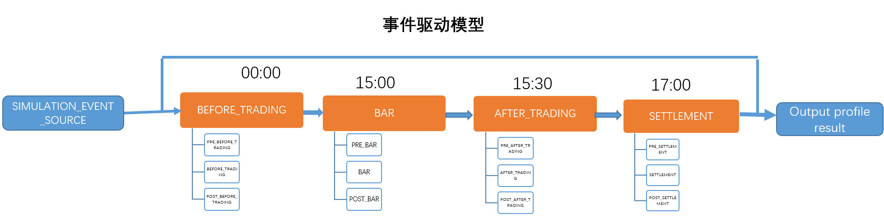
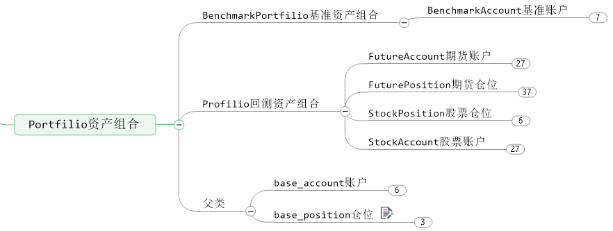
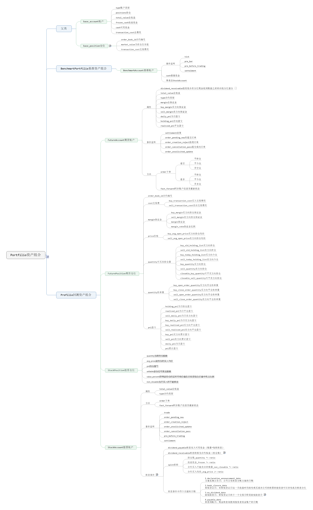
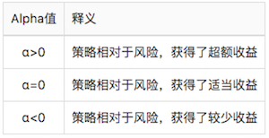

从RQAlpha开源量化投资框架的代码结构、技术选型、回测流程、撮合机制等多个方面分析。

RQAlpha框架代码结构

RQAlpha技术选型
数据存储
bcolz：列式压缩存储，本地磁盘；
ricequant远程数据以七牛云存储，需手动更新到本地；
策略因子
TA-LIB：金融市场数据的技术因子分析
实盘交易
VN.py，开源量化交易程序开发框架，交易API接口（vnpy.api）基本覆盖了国内外所有常规交易品种（股票、期货、期权、外汇、外盘、比特币）。
RQAlpha 对接 vnpy 的扩展 Mod（qalpha-mod-vnpy）。可通过启用该 Mod 来实现期货策略的实盘交易。
报表输出
图表：matplotlib
报表：XlsxWriter
辅助工具
命令行工具：click
回测流程
回测系统流程图

策略运行方式

日回测流程图

数据源

事件机制
事件源
- 获取回测时间段内的交易日；
- 遍历交易日获取日线/分钟线/tick的行情数据，发布事件到事件总线；
- EVENT.TICK
tick数据更新事件- PRE_TICK
- HANDLE_TICK
- POST_TICK
- EVENT.BAR
bar数据更新事件- PRE_BAR
- HANDLE_BAR
- POST_BAR
- EVENT.BEFORE_TRADING
交易发生前事件- PRE_BEFORE_TRADING
- HANDLE_BEFORE_TRADING
- POST_BEFORE_TRADING
- EVENT.AFTER_TRADING
交易成交后事件- PRE_AFTER_TRADING
- HANDLE_AFTER_TRADING
- POST_AFTER_TRADING
- EVENT.SETTLEMENT
结算事件- PRE_SETTLEMENT
- HANDLE_SETTLEMENT
- POST_SETTLEMENT
回测事件驱动模型

RQAlpha 大部分的组件是以 add_listener 的方式进行事件的注册。
以策略执行为例：
- 当Bar数据生成时，触发
EVENT.BAR事件，那么用户的handle_bar相关的代码注册了该事件则会立即执行。 - 当订单下单时，触发
EVENT.ORDER_PENDING_NEW事件，前端风控模块注册了该事件，则可以立即对该订单进行审核，如果不满足风控要求，则直接指定执行order._cancel(reason)来保证有问题的订单不会进入实际下单环节。 - 当订单成交时，触发
EVENT.TRADE事件，那么系统的账户模块因为注册了该事件，就可以立即计算成交以后的收益和资金变化。
程序化交易中很多操作，都是通过注册事件的方式插入到 RQAlpha 中进行扩展的。
事件分类
- SystemEvent: 系统事件源
- POST_SYSTEM_INIT: 系统初始化后触发
- POST_USER_INIT: 策略的
init函数执行后触发 - POST_SYSTEM_RESTORED: 在实盘时，你可能需要在此事件后根据其他信息源对系统状态进行调整
- MarketEvent: 市场及数据事件源
- POST_UNIVERSE_CHANGED: 策略证券池发生变化后触发
- PRE_BEFORE_TRADING: 执行
before_trading函数前触发 - BEFORE_TRADING: 该事件会触发策略的
before_trading函数 - POST_BEFORE_TRADING: 执行
before_trading函数后触发 - PRE_BAR: 执行
handle_bar函数前触发 - BAR: 该事件会触发策略的
handle_bar函数 - POST_BAR: 执行
handle_bar函数后触发 - PRE_TICK: 执行
handle_tick前触发 - TICK: 该事件会触发策略的
handle_tick函数 - POST_TICK: 执行
handle_tick后触发 - PRE_SCHEDULED: 在
scheduler执行前触发 - POST_SCHEDULED: 在
scheduler执行后触发 - PRE_AFTER_TRADING: 执行
after_trading函数前触发 - AFTER_TRADING: 该事件会触发策略的
after_trading函数 - POST_AFTER_TRADING: 执行
after_trading函数后触发 - PRE_SETTLEMENT: 结算前触发该事件
- SETTLEMENT: 触发结算事件
- POST_SETTLEMENT: 结算后触发该事件
- OrderEvent: 交易事件源
- ORDER_PENDING_NEW: 创建订单
- ORDER_CREATION_PASS: 创建订单成功
- ORDER_CREATION_REJECT: 创建订单失败
- ORDER_PENDING_CANCEL: 创建撤单
- ORDER_CANCELLATION_PASS: 撤销订单成功
- ORDER_CANCELLATION_REJECT: 撤销订单失败
- ORDER_UNSOLICITED_UPDATE: 订单状态更新
- TRADE: 成交
撮合机制
在回测时，订单撮合过程在运行结束 `handle_bar函数之后，是以历史实时行情进行的虚拟撮合。
由于是对真实场景的模拟，订单并不会立刻以某个价格成交，而是通过和实时行情的具体价格（结合股息、手续费、滑点、税率等计算）和具体成交量（不超过总成交量的0.25）进行比对，从而断定成交价格和成交时间。
撮合方式
RQAlpha提供的撮合方式有两种：
- 当前收盘价。即当前bar发单，以当前bar收盘价作为参考价撮合。
- 下一开盘价。即当前bar发单，以下一bar开盘价作为参考价撮合。
对于不同订单类型，成交条件如下：
限价单（LimitOrder）
如果买单价格>=参考价，或卖单价格<=参考价，以参考价加入滑点影响成交（买得更高，卖得更低）。
限价单会一直在订单队列中等待下一个bar数据撮合成交，直到当日收盘。当日收盘后，所有未成交限价单都将被系统自动撤单。
市价单（MarketOrder）
直接以以参考价加入滑点影响成交。成交数量都不超过当前bar成交量的25%。一旦超过，市价单会在部分成交之后被自动撤单；
不满足订单撮合条件的订单，会标记为拒绝，具体情况可能有：
- portfolio内可用资金不足
- 下单数量不足一手（股票为100股）
- 下单价格超过当日涨跌停板限制
- 当前可卖（可平）仓位不足
- 股票当日停牌
- 合约已经退市（到期）或尚未上市
当日收盘后，所有未成交订单都将被系统自动撤单。
注意：如果当时市场处于涨停或跌停这种单边市情况，买单（对应涨停），卖单（对应跌停）是无法成交的。尽管bar数据中可能成交量不为0。判断逻辑：当前bar数据的收盘价等于涨停价，则当前市场处于涨停状态。跌停也是类似处理。
日线级别回测
在一个handelbar内下单，下单时立刻撮合成交（成交价取决于撮合机制以及滑点设置）。
撮合方式遵循“先卖后买，开盘价撮合”原则，即先处理卖出订单，后处理买入订单，卖出订单产生的现金，会参与买入订单的交易。
由于下单是在当天开盘前，订单撮合会与当天开盘价进行比较，如果满足条件，就会撮合成交，如果不满足条件，则继续挂单，等待下一次撮合尝试。
分钟线级别回测
在一个handle_bar内下单，在该handle_bar结束时统一撮合成交（成交价取决于撮合机制以及滑点设置）。
撮合方式遵循“先下单先处理，开盘价撮合”原则，即先下单的订单会先进行撮合尝试。
订单撮合会与下一分钟K线的开盘价进行比较，如果满足条件，就会撮合成交，如果不满足条件，则继续挂单，等待下一次撮合尝试。
注意：在分钟回测以及实盘模拟中handle_bar内发单之后立刻通过cancel_order对该订单进行撤单操作，是一定会撤单成功的。但在日回测中则很可能撤单失败，因为日回测中下单之后立刻撮合成交。
资产组合
资产组合

资产组合详情

回测结果分析指标
年化收益率（Annualized Returns）
阿尔法（Alpha）
CAPM模型表达式中的残余项。表示策略所持有投资组合的收益中和市场整体收益无关的部分，是策略选股能力的度量。
当策略所选股票的总体表现优于市场基准组合成分股时，阿尔法取正值；反之取负值。
Alpha是投资者获得与市场波动无关的回报，一般用来度量投资者的投资技艺。
比如投资者获得了12%的回报，其基准获得了10%的回报，那么Alpha或者价值增值的部分就是2%。

该值越大越好。
贝塔（Beta）
表示投资的系统性风险，反映了策略对大盘变化的敏感性。例如，一个策略的Beta为1.3，则大盘涨1%的时候，策略可能涨1.3%，反之亦然；如果一个策略的Beta为-1.3，说明大盘涨1%的时候，策略可能跌1.3%，反之亦然。
该值越小越好。
夏普比率（Sharpe Ratio）
表示每承受一单位总风险，会产生多少的超额报酬，可以同时对策略的收益与风险进行综合考虑。
sharp是衡量策略最重要的一个指标，该指标的计算不仅考虑收益率，还考虑了风险，因此比较具有参考价值，可以理解为经过风险调整后的收益率。
收益波动率（Volatility）
用来测量资产的风险性，波动越大代表策略风险越高。
信息比率（Information Ratio）
衡量单位超额风险带来的超额收益。信息比率越大，说明该策略单位跟踪误差所获得的超额收益越高，
因此，信息比率较大的策略的表现要优于信息比率较低的。
合理的投资目标应该是在承担适度风险下，尽可能追求高信息比率。
最大回撤（Max Drawdown）
策略在整个时间段上亏损最严重的时候相比净值最高值下跌的百分比。描述策略可能出现的最糟糕的情况。
例如一个账户的净值是100,200,50,300,150,100, 200，那最大的亏损就是从300那个点开始一直亏到100。$MaxDrawDown=1-(100/300)=0.67$
最大回撤是策略评估时非常关键的一个指标，通常与风险承受能力相关。
换手率（Turnover Rate）
换手率也称周转率，指在一定时间内市场中股票转手买卖的频率，是反映股票流通性强弱的指标之一。
换手率描述了策略变化的频率以及持有某只股票平均时间的长短。
一般而言，交收期越短，换手率越高。
换手率的高低往往意味着这样几种情况：
- 股票的换手率越高，意味着该只股票的交投越活跃，人们购买该只股票的意愿越高，属于热门股；反之，股票的换手率越低，则表明该只股票少人关注，属于冷门股。
- 换手率高一般意味着股票流通性好。然而值得注意的是，换手率较高的股票，往往也是短线资金追逐的对象，投机性较强，股价起伏较大，风险也相对较大。
- 将换手率与股价走势相结合，可以对未来的股价做出一定的预测和判断。某只股票的换手率突然上升，成交量放大，可能意味着有投资者在大量买进，股价可能会随之上扬。如果某只股票持续上涨了一个时期后，换手率又迅速上升，则可能意昧着一些获利者要套现，股价可能会下跌。
例如，某只股票在一个月内成交了2000万股，而该股票的总股本为l亿股，则该股票在这个月的换手率为20%。